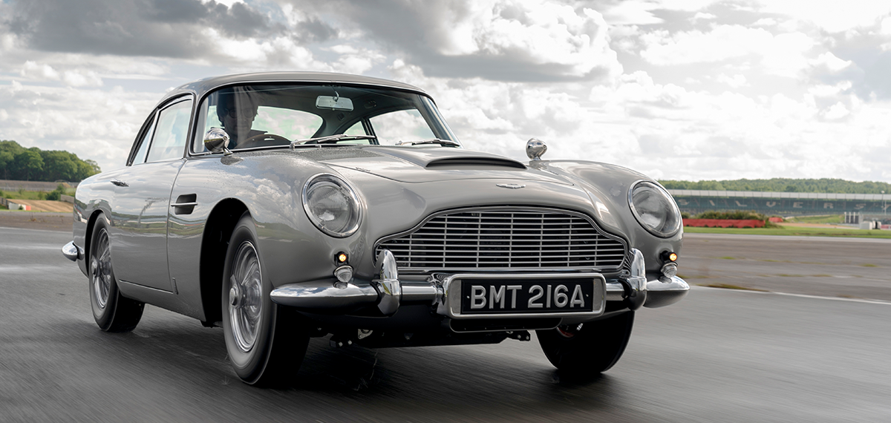
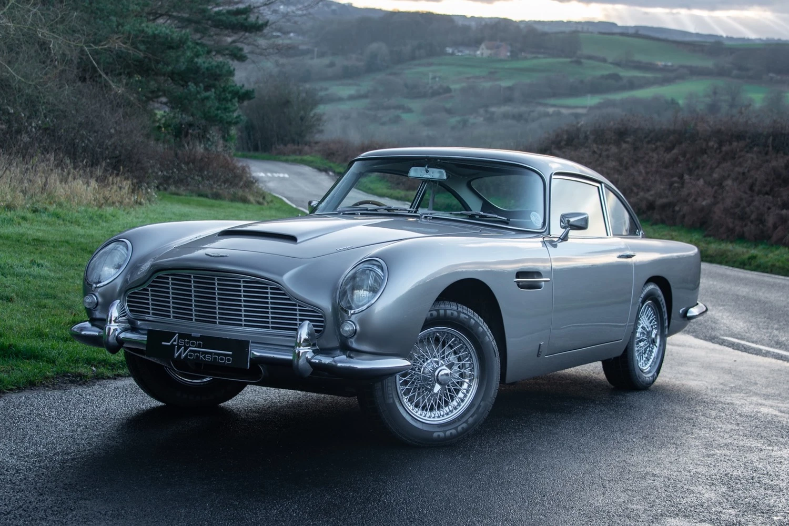

The Aston Martin DB5 is not just a car; it's an automotive legend, forever etched into the annals of motoring history as the epitome of luxury, style, and sophistication. Introduced in 1963, this quintessential grand tourer captivated the world with its timeless design, unmatched performance, and a touch of James Bond mystique. Sleek and aerodynamic, the DB5's iconic silhouette exudes elegance and power, with its long hood, gracefully flowing lines, and distinctive grille. Crafted with precision and attention to detail, every curve and contour of the DB5 reflects Aston Martin's commitment to excellence, making it a true work of art on wheels.
Beneath its bonnet lies a formidable powerplant—a silky-smooth inline-six engine, delivering exhilarating performance and a symphony of mechanical harmony. From the growl of its exhaust to the smooth purr of its engine, the DB5 offers a driving experience like no other, effortlessly blending performance with refinement. But perhaps what truly sets the DB5 apart is its association with the world's most famous fictional spy, James Bond. Featured prominently in the 1964 film "Goldfinger," the DB5 became synonymous with 007, equipped with an array of gadgets and weaponry that captured the imagination of audiences worldwide.
Beyond its silver screen fame, the Aston Martin DB5 represents the pinnacle of automotive luxury and craftsmanship—a timeless classic that continues to captivate enthusiasts and collectors alike, embodying the spirit of adventure, sophistication, and style for generations to come.